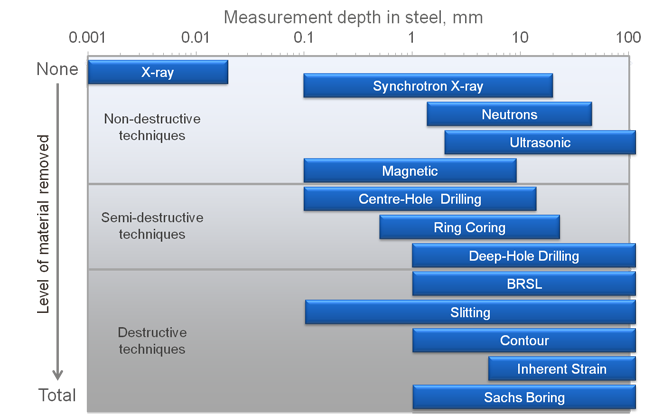

1.什么是残余应力
残余应力、也称内应力，是指当外部载荷去掉以后，仍存留在工件内部的应力。残余应力是由于金属内部组织，发生了不均匀的体积变化而产生的。其外界因素来自热加工和冷加工。具有内应力的工件，是处在一种不稳定状态之中，其内部的组织有强烈地恢复到没有内应力的稳定状态的倾向。工件的形状逐渐改变（如翘曲变形）从而丧失其原有精度。如果把存在内应力的工件装配到机器中，则会因其在使用中的变形而破坏整台机器的精度。撤掉弹簧载荷后，如果弹簧完全恢复，我们就说这是个理想弹性的过程；如果弹簧没有完全恢复，就会有残余的变形。
2.残余应力的来源
外力使零件变形，其中引起塑性变形的外力作的功，以零件内部材料变形而存贮在零件内。当外力消除以后，应力不均匀的能量要释放出来，引起了零件缓慢地变形，即残余应力作功，直到能量全部释放出来为止。在机械制造中，各种工艺过程往往都会产生残余应力。但是，如果从本质上讲，产生残余应力的原因可以归结为：
（1）不均匀的塑性变形；
（2）不均匀的温度变化；
（3）不均匀的相变。
3.残余应力对机械零部件的影响
（1）引起物体尺寸和形状的变化。当在变形物体内存在残余应力时，则物体将会产生相应的弹性变形或晶格畸变。若此残余应力因某种原因消失或其平衡遭到破坏，此相应的变形也将发生变化，引起物体尺寸和形状改变。
（2）使零件的使用寿命缩短。因残余应力本身是相互平衡的，所以当具有残余应力的物体受载荷时，在物体内有的部分的工作应力，为外力所引起的应力与此残余应力之和，有的部分为其差，这样就会造成应力在物体内的分布不均。此时工作应力达到材料的屈服强度时，物体将会产生塑性变形；达到材料的断裂强度时，物体将会产生断裂，从而缩短了零件的使用寿命。
（3）降低了金属的塑性、冲击韧性。当具有残余应力的物体继续进行塑性加工时，由于残余应力的存在可加强物体内的应力和变形的不均匀分布，使金属的变形抗力升高，塑性降低。
（4）降低金属的耐蚀性以及和疲劳强度等。由于零件内部的残余应力，使其处于高能量状态，易与氧化介质发生化学作用，造成腐蚀，即应力腐蚀，从而降低了零件的耐蚀性，残余应力还改变了材料表面受载时的应力分布，降低疲劳强度。
4.残余应力对零件切削加工影响
对切削加工过程的影响车削零件的毛坯，一般为铸件、锻件、型材和经过热处理的半成品，由于毛坯在形成的过程中，有过温度的剧烈变化及受力变形，因此内部具有残余应力，在切削时形状发生变化，原应力平衡状态被打破，导致了切削过程的变形。
4.1产生切削残余应力
金属的切削，实质上是工件受刀具的挤压和摩擦，使工件表面产生弹性变形和塑性变形，切屑从母体分离的过程。在切削过程中，工件受到切削力，产生切削热而使切削温度上升，切削完成后，工件的已加工表面即产生了残余应力，使工件在以后的使用中发生变形，精度降低，使用性能和下降，使用寿命缩短。
4.2影响残余应力的因素
（1）切削用量。切削速度———切削速度提高，工件温度上升，残余应力增加；走刀量和切削深度———走刀量和切削深度越大，切削力就越大，残余应力也越大。
（2）刀具角度。增大刀具的前角，刃倾角，可使刀具锋利，减小切削力。
（3）切削液。切削液具有润滑和冷却作用，在加工中使用切削液，可减小切削力和降低切削温度，使残余应力减小
5.减小和消除残余应力的措施和方法
（1）采用合理的工艺结构在零件的设计时，采用合理的工艺结构，避免厚薄不匀，尖角结构等，铸件宜使用铸造圆角。
（2）合理安排工艺路线对于精密零件，粗、精加工分开。对于大型零件，由于粗、精加工一般安排在一个工序内进行，故粗加工后先将工件松开，使其自由变形，再以较小的夹紧力夹紧工件进行精加工。
（3）采用合理的切削条件。在零件的精加工时，使用较小的切削和走刀量以及较高的切削速度，使用锋利的刀具和使用切削液进行润滑冷却，以减小切削力和降低切削温度，减小残余应力。
（4）采取时效处理技术
- 自然时效处理。
- 热时效处理。这是目前使用最广的一种方法，但其投资和能源消耗都较大，使生产成本增加，而且精加工后零件进行加热时效，有可能产生氧化而影响表面品质。
- 振动时效处理。这是消除残余应力、减少变形以及保持工件尺寸稳定的一种新方法。可用于铸造件、锻件、切削加工工件等。它是以激振的形式，将机械能加到含有大量残余应力的工件内，引起工件金属内部晶格错位蠕变，使金属的结构状态稳定，以减少和消除工件的内应力。不需庞大的设备，经济简便，效率高。频谱谐波时效技术是在此机床上的发展，能消除60-70%的应力，在稳定尺寸和形状精度上非常有效。
当先前的金属加工操作中存在不希望的残余应力时，可以使用几种方法减少残余应力的大小。这些方法可以分为热和机械（或非热）方法。[12]所有方法都涉及将要缓解应力的零件整体加工。
- 散热方法
热法涉及通过加热或冷却均匀改变整个零件的温度。当零件加热以消除应力时，该过程也称为消除应力烘烤。[13]用于缓解应力的冷却部件被称为低温应力消除，并且相对较少见。 - 缓解应力
大多数金属在加热时会降低屈服强度。如果通过加热充分降低了材料的屈服强度，则材料中承受残余应力大于屈服强度（在加热状态下）的位置的位置将屈服或变形。这使材料具有残余应力，该残余应力最多与材料在加热状态下的屈服强度一样高。
消除应力的烘烤不应与退火或回火相混淆，退火或回火是提高金属延展性的热处理。尽管这些过程还涉及将材料加热到高温并降低残余应力，但它们还涉及冶金性能的变化，这可能是不希望的。
对于某些材料（例如低合金钢），在应力释放烘烤期间必须小心，以免超过材料达到最大硬度的温度（请参阅合金钢的回火）。 - 低温应力消除
消除低温应力包括将材料（通常是钢）置于低温环境中，例如液氮。在此过程中，要消除应力的材料将长期冷却至低温，然后缓慢恢复至室温。 - 非热方法
减轻不希望的表面拉应力并将其替换为有益的压缩残余应力的机械方法包括喷丸处理和激光喷丸处理。每个都使用一种介质来处理材料的表面：喷丸处理通常使用金属或玻璃材料；激光喷丸处理使用高强度光束来产生冲击波，该冲击波会深深地传播到材料中。
6.残余应力测量方法
- 概述
有许多用于测量残余应力的技术，它们大致分为破坏性，半破坏性和非破坏性技术。技术的选择取决于所需的信息和测量样品的性质。影响因素包括测量的深度/穿透率（表面或整个厚度），要测量的长度标尺（宏观，介观或微观），所需信息的分辨率以及样品的组成几何形状和位置。另外，某些技术需要在专门的实验室设施中执行，这意味着不可能对所有技术都进行“现场”测量。 - 破坏性技术
破坏性技术会导致标本发生较大且无法修复的结构变化，这意味着标本无法恢复使用或必须使用模型或备用零件。这些技术使用“应变释放”原理发挥作用。切割测量样本以消除残余应力，然后测量变形的形状。由于这些变形通常是弹性的，因此变形的大小与释放的残余应力的大小之间存在可利用的线性关系。[4]破坏性技术包括：
（1） 轮廓法[5] –在垂直于用电火花线切割机床穿过样品的表面的单轴方向上，测量穿过样品的2D平面截面上的残余应力。
（2） 纵切（裂纹顺应性） [6] –测量垂直于切开的“狭缝”的整个试样厚度的残余应力。
（3） 块移除/拆分/分层[7]
（4） SACHS BORING TECHNIQUE[8] - 半破坏性技术
与破坏性技术类似，它们也使用“应力释放”原理起作用。但是，它们仅去除少量材料，而保留了结构的整体完整性。这些包括：
（1） 深孔钻探[9] –通过释放围绕小直径钻孔的“芯”中的应力来测量贯穿部件厚度的残余应力。
（2） 中心孔钻探[10] –通过应变释放来测量近表面残余应力，该应力释放对应于带有应变仪花环的小浅孔。中心孔钻孔深度最大为4 mm。另外，盲孔钻孔可用于薄型零件。也可以在现场进行中心孔钻孔以进行现场测试。
（3） 环形铁心[11] –与中心孔钻探相似，但穿透性更大，并且切割是在应变仪花环周围而不是通过其中心进行的。 - 无损技术
非破坏性技术测量残余应力与被测材料的晶体学性质之间的关系。其中一些方法是通过测量相对于无应力样品通过原子晶格间距（由于应力而变形）的高频电磁辐射的衍射。超声波和电磁技术利用材料的声学和铁磁特性来执行残余应力的相对测量。无损技术包括：
（1） 电磁aka eStress-最有效的[ 需要引用 ]过程：可以用于各种样品尺寸和材料，其精度与中子衍射相当。可使用便携式系统，例如eStress系统，该系统可用于现场测量或永久安装以进行连续监控。每个位置的测量速度为1-10秒。
（2） 中子衍射 -一种成熟的技术，可以测量全厚度，但需要中子源（如核反应堆）。
（3） 同步加速器衍射 -需要同步加速器，但提供与eStress和中子衍射方法类似的有用数据。
（4） X射线衍射 -仅穿透几百微米的有限表面技术。
（5） 超声波 -实验过程仍在进行中。
（6） 磁性 -可以用于非常有限的样本尺寸。

参考文献
[1] https://zhuanlan.zhihu.com/p/25778352
[2] https://en.wikipedia.org/wiki/Residual_stress